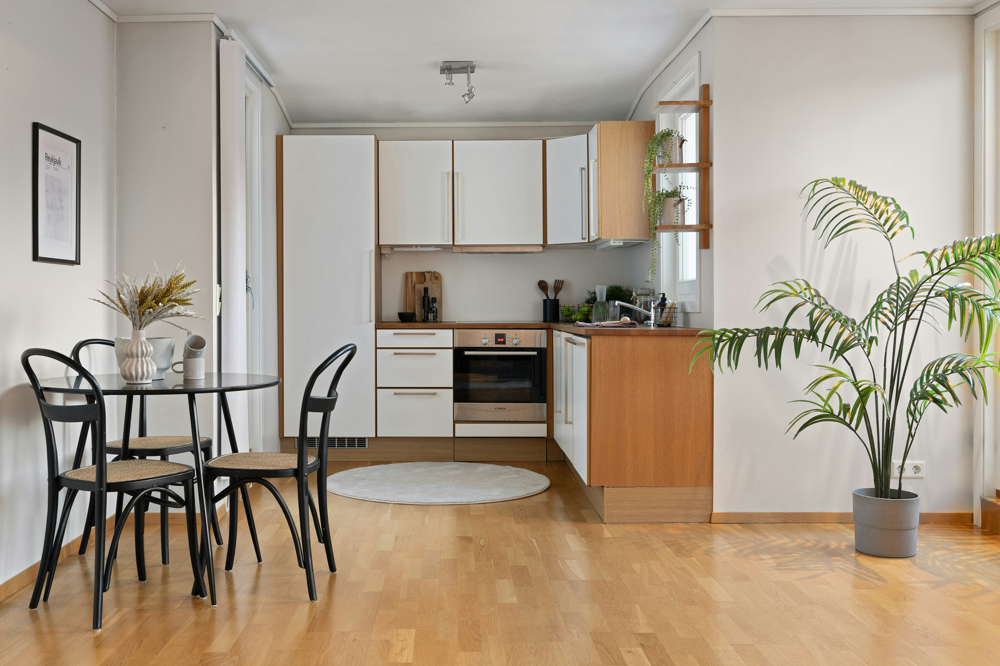

Residential cleaning in the Wasatch Back
Park City, Heber and Midway homes that truly shine.
Sun Ray Cleaning Services is a female-owned local team trusted for eco-friendly house cleaning, deep cleans, recurring service, move-in and move-out cleaning, and Airbnb turnovers across northern Utah mountain communities.

Professional cleaning services
Everything your home needs to feel fresh, reset and guest-ready.
Our highest-demand services match the local market: short-term rental turnovers in Park City, luxury and second-home care in Heber and Midway, and reliable recurring house cleaning across the region.
Airbnb and VRBO turnover cleaning
Fast, reliable short-term rental cleaning for Park City, Deer Valley, Canyons Village, Old Town and Heber Valley hosts.
View rental cleaningWeekly and biweekly recurring cleaning
Consistent home cleaning with a practical checklist for kitchens, bathrooms, bedrooms, floors and high-touch surfaces.
View recurring cleaningOne-time deep cleaning
A top-to-bottom reset for dust, buildup, baseboards, fixtures, appliance interiors and mountain-home seasonal mess.
View deep cleaningMove-in and move-out cleaning
Detailed move cleaning for sellers, renters, landlords, buyers and real estate professionals.
View move cleaningLocal service areas
Built for Park City, Heber Valley, Midway and Salt Lake homes.
Each location page is written around the neighborhoods, cleaning needs and search intent that matter locally.
Park City cleaning services
House cleaning, luxury home care and vacation rental turnover cleaning for Old Town, Deer Valley, Canyons Village, Promontory, Park Meadows and nearby areas.
Explore Park CityHeber City cleaning services
Recurring, deep, move and second-home cleaning for Heber City, Red Ledges, Heber Valley, Daniel, Charleston and Jordanelle-area homes.
Explore Heber CityMidway cleaning services
Cabin cleaning, vacation home cleaning and recurring care for Midway, Interlaken, Swiss Mountain, Deer Creek and Homestead-area properties.
Explore MidwaySalt Lake County cleaning
Residential cleaning for Salt Lake County homes, condos and townhomes, including Sandy, Draper, Cottonwood Heights and South Jordan.
Explore Salt Lake
Why choose us?
Local cleaners who understand mountain homes and guest schedules.
Park City and Heber Valley homes deal with dust, snow-season grit, hard-water buildup, pets, rental turnover pressure and seasonal vacancy. Our team works from a clear checklist so your home feels calm, clean and ready when you walk in.
- Transparent pricingNo-surprise quotes based on your home size, condition, frequency and cleaning priorities.
- Eco-friendly optionsPet-safe and low-tox products available for families, hosts and second-home owners.
- Local service knowledgeNeighborhood-aware scheduling for Deer Valley, Old Town, Canyons Village, Red Ledges, Midway and Salt Lake County.
High-intent SEO focus
Vacation rental cleaning is a top Park City opportunity.
Sun Ray Cleaning now has a dedicated short-term rental service page for searches like "Airbnb cleaning Park City", "VRBO cleaning Park City Utah", "Canyons Village Airbnb cleaning" and "Deer Valley vacation rental cleaning".

Questions homeowners ask
Helpful answers for cleaning quotes and scheduling.
What areas does Sun Ray Cleaning Services cover?
How much does house cleaning cost in the Park City area?
Do you offer same-day vacation rental turnover cleaning?
Do you use eco-friendly products?
What is included in the cleaning checklist?
Ready for a cleaner space?
Get a quick, transparent quote.
Text or call with the home size, room count, pets, condition, schedule and service type. We will help you choose the right clean without surprises.